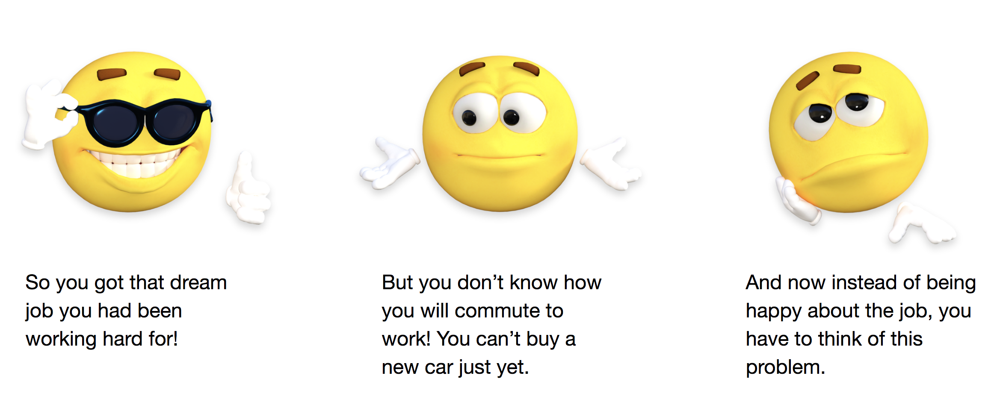
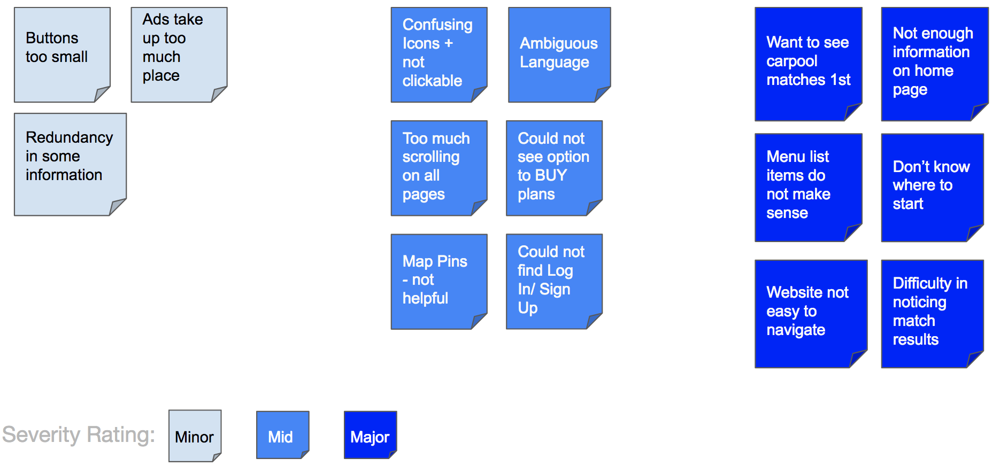

CARPOOLWORLD
Website Evaluation and App Design
CarpoolWorld has been the global leader in authentic rideshare matching since its website launch in 2000. Unlike other ride hailing apps, CarpoolWorld enables substantial cost savings for drivers and passengers while alleviating infrastructure and environmental impacts.
We believe their cause has tremendous potential. We designed a prototype mobile app for the company to make the platform more accessible to the users.
Project Duration: 3 months
Problem Definition
CarpoolWorld has registered more than 500,000 individual users and hundreds of prestigious universities, municipalities, hospitals, and corporate ride sharing groups across the U.S.A. and around the world. The company wanted to further expand their reach, but realized that more and more of their clients were looking for a mobile app as opposed to a website for ease of accessibility.
The client thus approached us with clearly defined problems that they wanted to resolve -- enhance the user experience by designing for a mobile app and improve the user retention rate. The company did not have a developed mobile app, but they did have a low-fidelity prototype that they wanted us to work off of. The idea was to create an interface that offers instant access and improve the data collection process of the platform.
Our Strategy
Our strategy was quite straightforward.
- Evaluate the existing web app
- Identify issues with the current platform
- Test the web app with users
- Map all the issues and device the final goals
- Come up with related design solutions for the mobile app
- Test with the users again and iterate the designs
- Note the feedback and list out the next steps
Audience
When inquired about the user base, CarpoolWorld specifically mentioned they leverage their trusted cloud-based rideshare search engine for prudent and conscientious enterprises. The goal is simple.

The company already has 30+ prestigious paying clients which gives them about 500,000 users, a majority of which comprise of the corporate companies. The employees of these companies was our user base.
We could not get access to their actual clients, but each of the team members was working over the summer and this helped us get an understanding regarding the thought process of interns/newly hired employees and what are the issues they face in their commute to work. One of our own team members had this situation and this helped us gain invaluable insight into the problem. Instead of creating personas of our users we decided to take a different approach. We created a general situational story for a general user case of the application. 
My Team/Role
Malvi Shah Damini Bhatt Suleiman Ali Shakir
Each of us had a different way of looking at the task at hand, and that subsequently helped us consider multiple design directions and further strengthened the final solution. I conducted the research, talked to the users, learnt about their frustration and pain points and analysed the findings at length with my teammates. We collectively set up specific goals for the project. I worked on designing the wireframes, taking into consideration the appropriate interface design patterns and also participated in testing the prototype.
Design Process
Once we were familiar with the existing website, we decided to test it with some users who could potentially fall under the demographic for the app. We decided to test the app on mobile since we were designing a mobile app. By doing so we could get a good idea of their pain points and their thought processes with reference to mobile.
We initially thought of giving the users certain tasks to complete as a part of the testing. Pretty early on in the process, we realized that not giving the users a brief of what the app actually does will prove to be a hurdle. So we gave them a pre-story to work with.

Some of the comments that the users made during this process helped us recognize the notable issues that existed with the interface.
“Where is the input field to put in my pick-up and drop-off address?!!”
“Why Isn’t this icon clickable? I was hoping that clicking on this icon would take me to the person’s profile page.”
As a result of the testing process, we discovered there were several issues, big and small, that needed to be addressed. We did not want to get distracted from the final goal by going into multiple design directions, and so we decided to organize all these issues based on their severity levels. We realized that some of the minor and mid level issues would be addressed anyhow since we will be designing for mobile. As for some of the major issues, the pain points gave us a strong indication of the design direction we eventually opted to choose.

The research findings and the client requirements eventually helped us narrow down on definite goals that we would want to accomplish through our proposed designs. In addition to this, due to the time constraint, we determined that it is imperative that the visual aspect of our design is informed by our holistic strategy first, and amplified by their aesthetic integrity second. We decided to focus more on the layout structure and placement rather than high-fidelity visual design, and honor the CarpoolWorld branding.
Constraints
- We had to deal with a lot of platform inconsistencies during our discover and design process. It was a difficult task to device usability modifications for mobile based on the issues existing in the website.
- One of the key things that we noticed during our initial ideation process was that keeping in mind the time constraints for the project, we would not be able to address the user flows for different user cases - like driver and passenger.
- One of our proposals was to break down the initial onboarding process by implementing a gradual process of data collection. We even demonstrated what this would look like, but since we were working on creating a prototype and not developing an actual app, we could not validate this suggestion.
- One of the biggest limitations that we had was not having access to the existing user base. While we did interview users who could relate to the concept of the app, it would have been greatly beneficial if we could get some feedback from users who had used the platform before.


“Why HELP?! When I clicked on that hamburger icon, I did not expect to see the Help Option as the first thing in the list!”